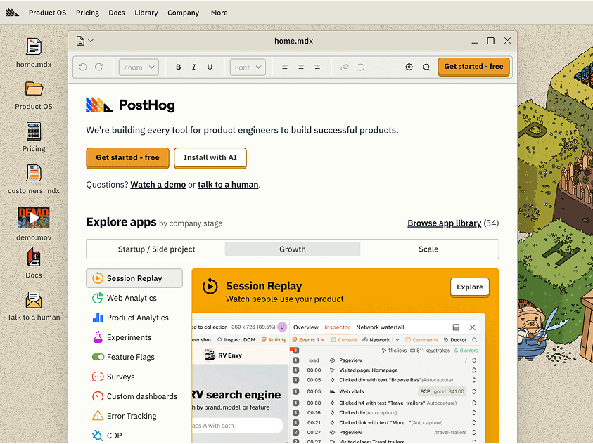

PostHog
I joined PostHog as the first marketing hire, back when all it did was analytics. Now, I lead the marketing team, we’re building every tool developers need to ship better products, and we’re valued at over $1.6bn.
Teams at PostHog wear many hats, so I’ve done everything from launching our startup program to shipping product features like the in-app roadmap. I also built the foundations of our content, demand gen, customer support, partnerships, and product marketing teams.
My PostHog profile